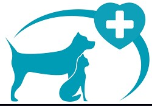
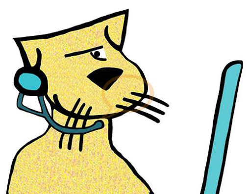

CLINICA VETERINARIA
CATDOG

LA IMPORTANCIA DEL JUEGO EN LOS CHACHORROS
No, no se trata solo de ocio. El juego en el perro forma parte de su bienestar físico y emocional. Por una parte, porque se trata de un animal social que necesita jugar para despertar sus habilidades. Por otro lado, porque es jugando como el perro crea un vínculo de pertenencia con su dueño. Lo personalizamos en lo que respecta al humano porque está en nuestra mano hacer que nuestro perro juegue, tanto con nosotros como con sus congéneres.
Leer mas
DEMENCIA SENIL EN PERROS
El síndrome de disfunción cognitiva, o demencia senil, es una enfermedad que provoca un conjunto de síntomas que aparecen comúnmente en perros de edad avanzada debido al envejecimiento del sistema nervioso central. Tiene una más pronta aparición en perros de gran tamaño, debido a que estos envejecen antes, se calcula que puede aparecer a partir de los 7 años, aunque es más común a partir de los 10 u 11. Puede aparecer en perros de cualquier tamaño.
Leer masOBESIDAD EN GATOS
La forma más frecuente de malnutrición entre las mascotas del Reino Unido y de España es el consumo excesivo de calorías que conduce a la obesidad. Se estima que entre un 25 y un 30 por ciento de los gatos están obesos. Se considera a un gato “obeso” cuando su peso supera en un 20% su peso óptimo, debido a una acumulación excesiva de grasas. Un gato presenta “sobrepeso” cuando su peso supera entre un 1 y un 19 por ciento su peso óptimo.
Leer masSOLICITAR CITA MEDICA
Validar citaContactenos.
Telefono: 313 592 55 24. e-mail:difetsa3@gmail.com Bogota-Colombia.
